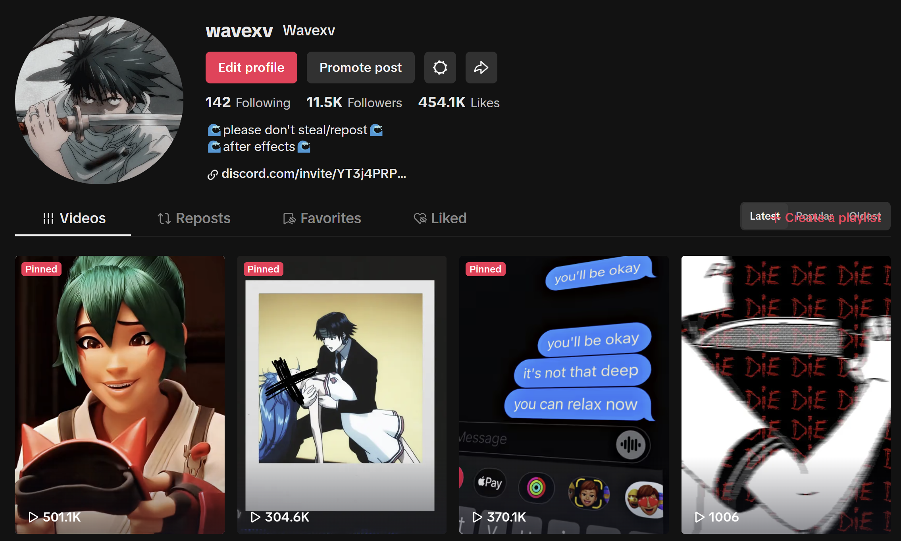
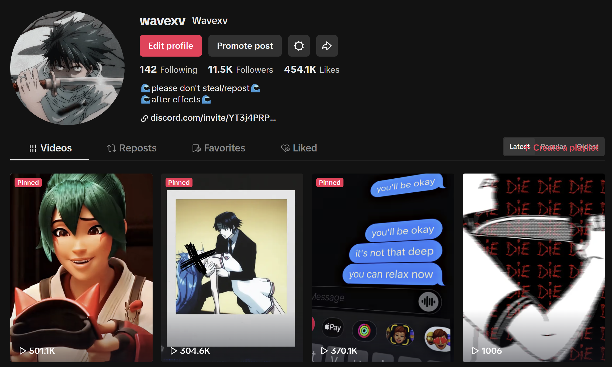
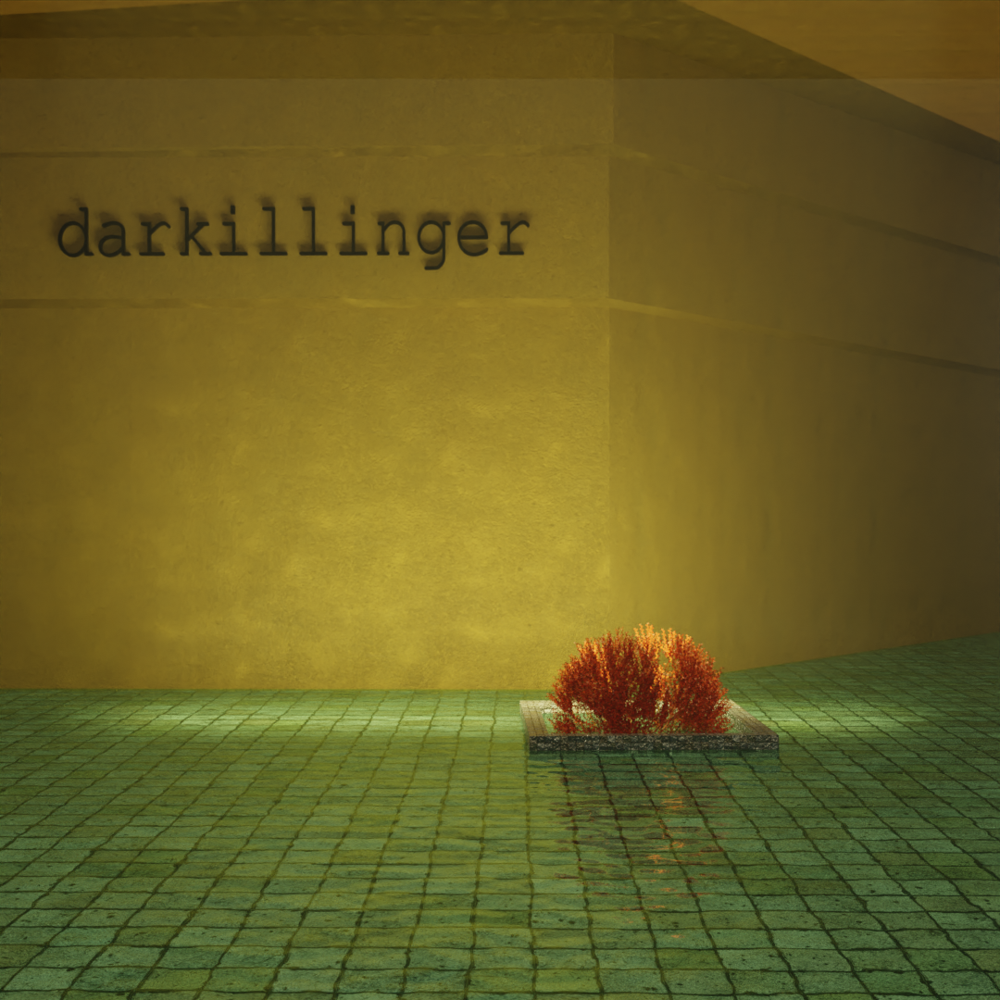
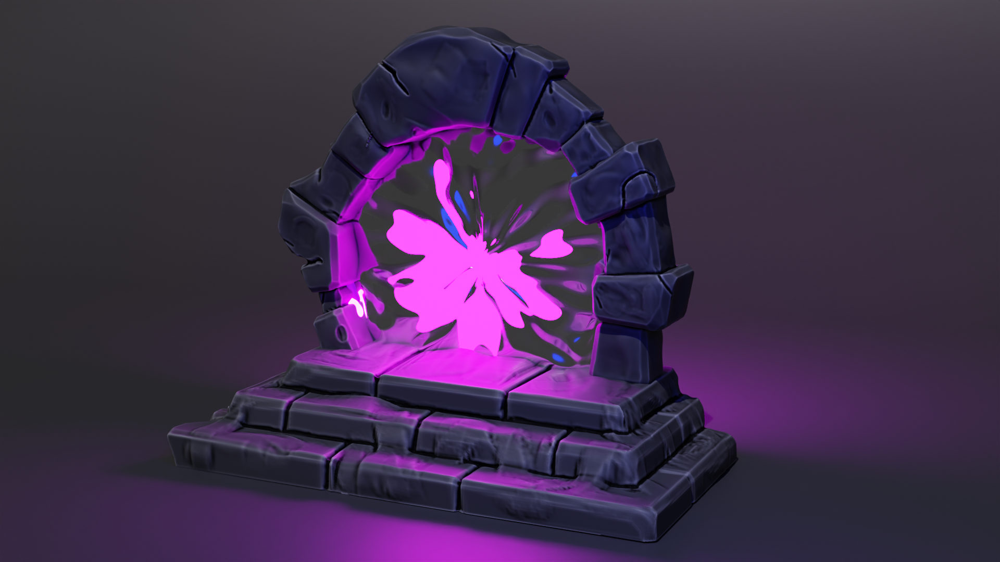
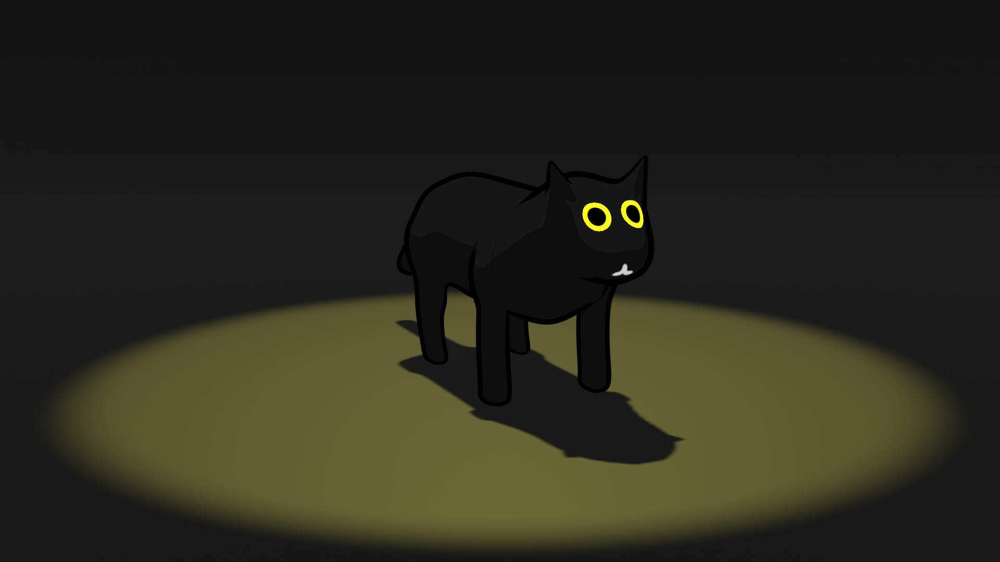

Welcome to my page about me! I'll go over some of my interest and different hobbies.
Since 8th grade, I have taught myself how to use Adobe After Effects to create videos for my YouTube and TikTok.
It's been over a year since I stopped editing as much as I used to, which I will mention in the next section.
 

After so many years of editing videos, I learned that my favorite part of it was the video itself. I started to pay close attention to different 3D artists and film makers, which turned into a love for creating the videos rather than editing them. The two different paths I want to bring my studies of 3D go from character creation and animation.
Below are some of my works as a beginner in 3D art.
  
While I'm not editing or using 3D I'm probably playing games!
In no particular order here are my favorite games.
© 2024 HTML/JavaScript Class